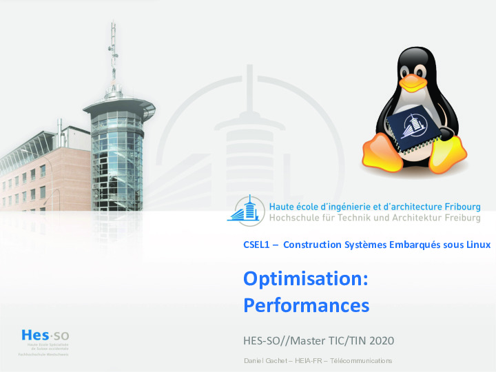

Aller au contenu
Construction de systèmes embarqués sous Linux
Leçon / Slides
Construction de systèmes embarqués sous Linux
Accueil
Organisation
Organisation
Introduction
Examens Oraux
Documentation
Documentation
Références
Tools
Microprocesseur
NanoPi NEO Plus2
Environnement et infrastructure
Environnement et infrastructure
Environnement Linux embarqué
Environnement Linux embarqué
Leçon / Slides
Travaux pratiques
Programmation Noyau
Programmation Noyau
Modules noyaux
Modules noyaux
Leçon / Slides
Travaux pratiques
Pilotes de périphériques
Pilotes de périphériques
Leçon / Slides
Travaux pratiques
Programmation Système
Programmation Système
Système de fichiers
Système de fichiers
Leçon / Slides
Travaux pratiques
Table des matières
Compléments
Performances / Leçon

Compléments
Sources
Exemples